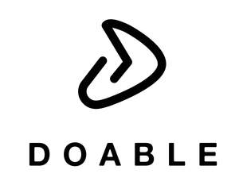

Trade Mark Journal No.2025/041 10 October 2025
UK00004262765 11 September 2025 (25)

- Class 25
- Clothing; Knitwear [clothing]; Jackets [clothing]; Ready-to-wear clothing; Leisure clothing; Clothing for sports; Sports clothing; Clothes for sports; Jackets being sports clothing; Sports garments; Articles of sports clothing; Sports clothing [other than golf gloves]; Sports footwear; Footwear for sports; Clothes for sport; Athletic clothing; Sports shirts; Sports jackets; Sports shoes; Sports jerseys and breeches for sports; Sports wear; Clothing for skiing; Footwear not for sports; Triathlon clothing; Footwear for sport; Footwear for use in sport; Sports jerseys; Clothing for cycling; Sports bras; Sports vests; Sports pants; Sports bibs; Jerseys [clothing]; Clothing for leisure wear; Moisture-wicking sports shirts; Parts of clothing, footwear and headgear; Sports socks; Sport shirts; Sports headgear [other than helmets]; Athletics footwear; Woolen clothing; Headbands for clothing; Combative sports uniforms; Headbands [clothing]; Moisture-wicking sports bras; Dance clothing; Casual clothing; Shorts [clothing]; Moisture-wicking sports pants; Water-resistant clothing; Clothing for cyclists; Articles of clothing; Beach clothing; Gloves [clothing]; Gloves as clothing; Athletic footwear; Sports over uniforms; Men's clothing; Wristbands [clothing]; Jackets (Stuff -) [clothing]; Stuff jackets [clothing]; Sportswear; Sports caps; Waterproof clothing; Bodies [clothing]; Windproof clothing; Garments for protecting clothing; Linen clothing; Embroidered clothing; Rainproof clothing; Latex clothing; Trunks being clothing; Clothing for children; Weatherproof clothing; Thermal clothing; Gym shorts; Jogging bottoms [clothing]; Golf clothing, other than gloves; Bottoms [clothing]; Jogging outfits; Tops [clothing]; Athletic shoes; Athletic uniforms; Clothing for gymnastics; Athletic tights; Padded shirts for athletic use; Padded shorts for athletic use; Jogging sets [clothing]; Gloves for apparel; Boxing shorts; Clothing for martial arts; Casual footwear; Casual shirts; Casual jackets; Casual wear.
Lee Westley